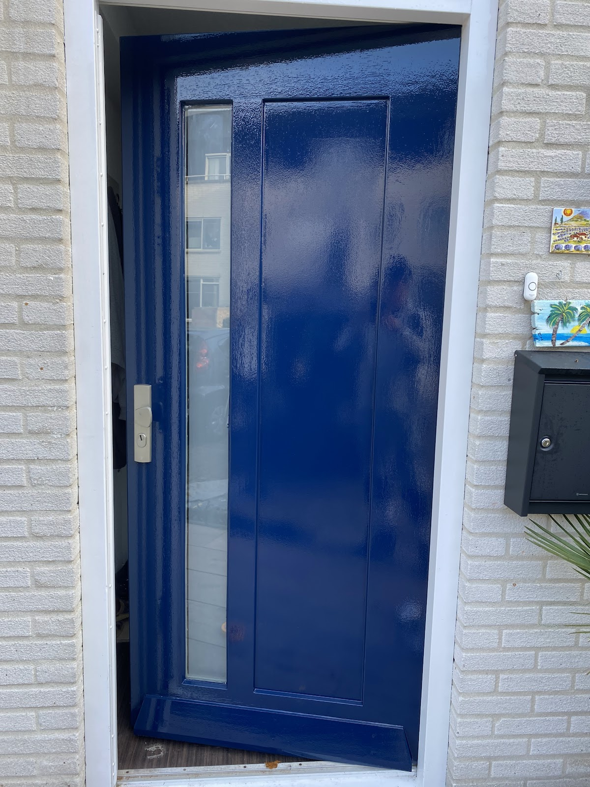
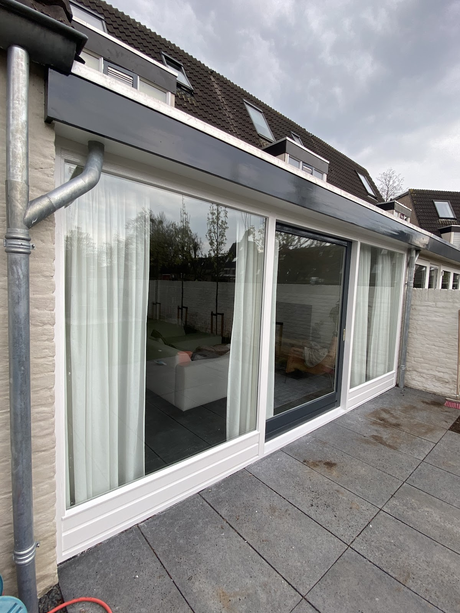
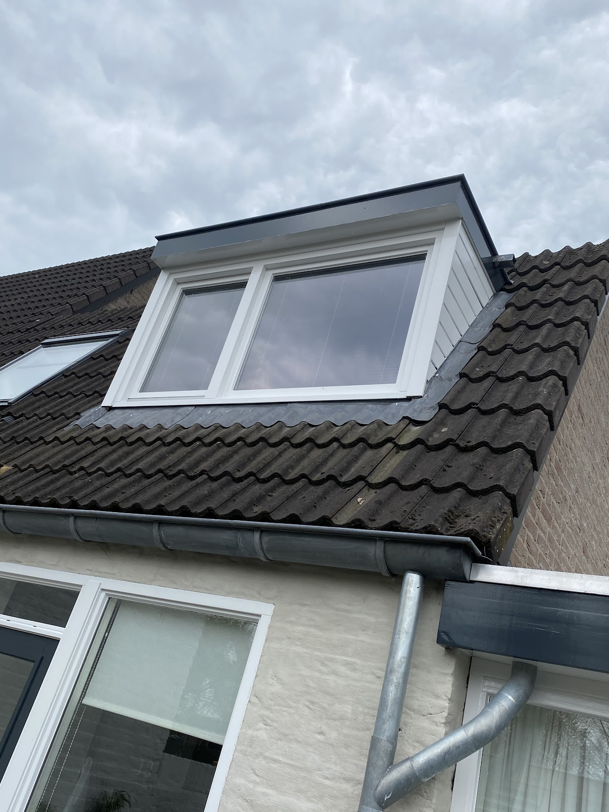
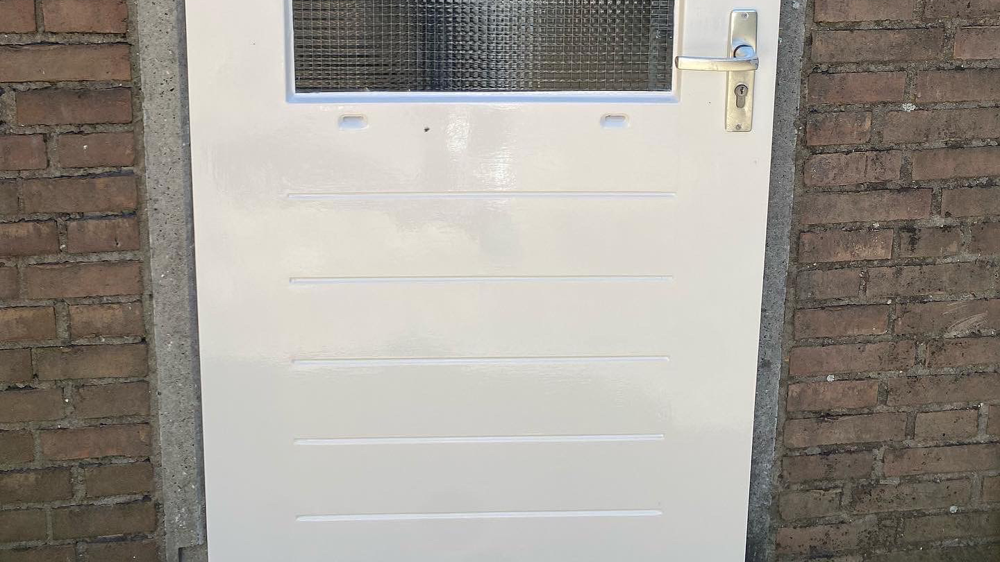
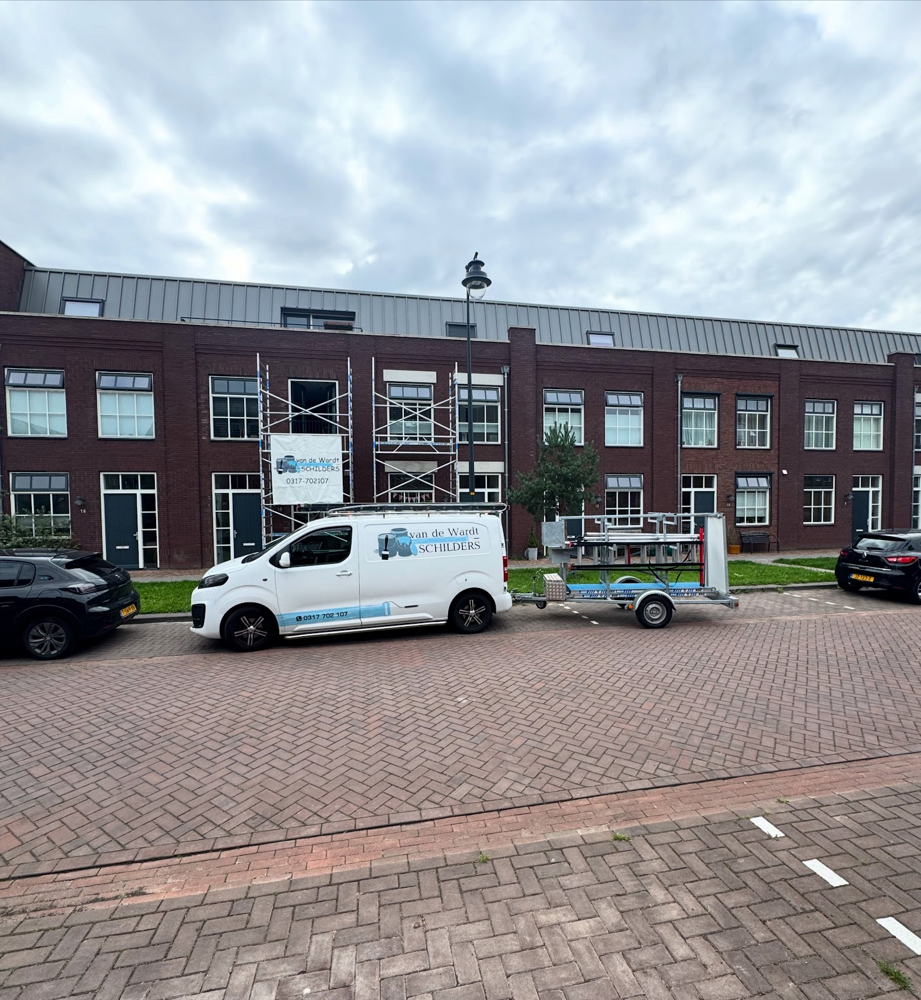

Schilderwerk
Binnen en buiten. Binnen onder meer:
- Wanden en plafonds
- Kozijnen en deuren
- Trappen
- Radiatoren
- Keukens en kasten, spuiten kan ook
Schilder, glaszetter of timmerman nodig? Bij Van de Wardt schilders heeft u één aanspreekpunt. Youri regelt het complete onderhoud van uw woning of bedrijfspand, binnen en buiten.
5 sterren uit 18 Google-reviews

Een greep uit ons werk. Nette afwerking en afspraken nakomen vinden wij vanzelfsprekend.



Of het nu gaat om schilderwerk, houtrot, glas of gevelbekleding: u belt één nummer en wij regelen het. Wij denken graag mee en geven eerlijk advies voor het beste resultaat.
Bespreek uw klus met YouriBinnen en buiten. Binnen onder meer:
Eerst inspectie, dan herstel waar het nodig is:
Bij glasbreuk, condens tussen het glas, slechte isolatie of als u energie wilt besparen. Voor lagere energiekosten, betere isolatie en minder geluid.
5 sterren uit 18 reviews op Google
“Mijn studio is geweldig netjes geschilderd door Youri en zijn mannen. Youri denkt goed met je mee en komt met passende oplossingen. Communicatie verloopt prima en Van de Wardt schilders kan ik u zeker aanbevelen.”
“Van de Wardt schilders, schilderen al jaren voor onze VvE met 48 appartementen, waar wij zeer tevreden over zijn en dan ook nog voor een goede/eerlijke prijs, bedankt Youri, wij hopen nog vele jaren gebruik te mogen van jullie diensten, top, top en top, ga zo door!”
“Youri en zijn mannen hebben bij ons het buitenschilderwerk gedaan. Als je ooit een vrolijke, kundige en enthousiaste schilder nodig hebt moet je Youri bellen. Youri doet zijn werk met volle overgave en denkt kundig in oplossingen mee bij problemen. Bij onvoorziene situaties zoals een dakgoot die lek blijkt heeft Youri…”
“Youri en zijn collega’s hebben bij ons het buitenschilderwerk aangepakt. Van begin tot eind heeft Youri ons meegenomen in zijn gedachtes en ons vakkundig geadviseerd. Bij tegenslagen op het gebied van het conditie van het hout kregen wij diverse opties (van tijdelijke goedkopere oplossingen tot duurdere totaal vervang…”
“Vd Wardt Schilders heeft voor mij meerdere projecten gedaan en tot volle tevredenheid. Het contact is persoonlijk en ze denken ook leuk mee over kleurkeuze. In mijn tweede project wilde ik ook veel zelf doen en daar werd heel behulpzaam en flexibel mee omgegaan. Zo werd het meer een samenwerking dan een simpele gegeven…”

Herkent u de witte bus met de blauwe streep? Dan staan we waarschijnlijk bij u in de buurt. Wij werken onder meer in:
Bel of app Youri direct. Liever eerst iets op papier? Stuur een bericht, dan nemen wij contact met u op.